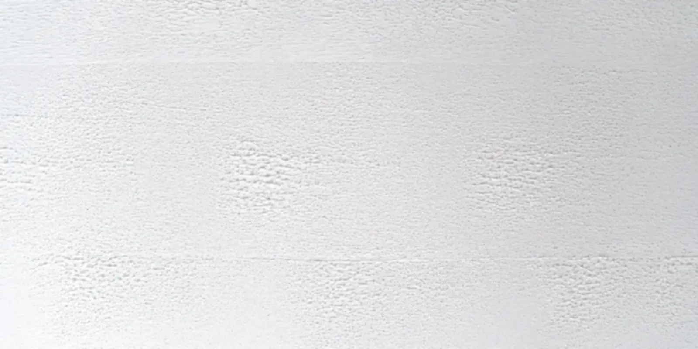
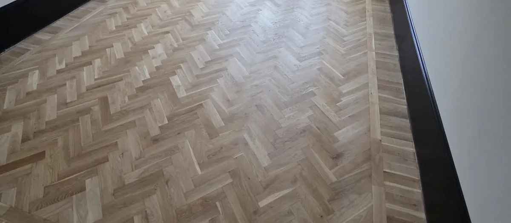

Tjänst · Uddevalla & Trestad
Måleri som ser färdigt ut även i kvällsljus
Väggar, tak, fönster, dörrar och fasader. Vi lägger tiden på spackel, grundning och täckning — det är där ett målerijobb avgörs.
Måleri & tapet — så gör vi
Ett måleriarbete som ska hålla börjar långt före första strykningen. Handlar det om utvändigt trä ska löst sittande färg bort, trät tvättas och grundas — målar man över gammal, dåligt fästande färg följer allt med inom ett par år.
Invändigt handlar det mesta om underlaget. Spackel som inte torkat klart, hörn som är slarvigt satta eller gammal tapetlim som lämnats kvar syns direkt i släpljuset från ett fönster. Vi lägger tiden där i stället för att lägga på fler lager färg.
Sedan målar vi. Kulörer går vi igenom med dig innan vi börjar, på provbit om du är osäker, så att du inte står med ett färdigt rum i fel ton.
Fasta priser efter besiktning. Inga tillägg under arbetet. ROT-avdrag drar vi av direkt på fakturan för arbete i din bostad.
Det här ingår
- Spackling, slipning och grundning
- Målning av väggar och tak
- Fönster, dörrar, lister och foder
- Tapetsering med mönsterpassning
- Borttagning av gammalt tapetlim
- Fasad, knutar och fönster utvändigt
- Täckning av möbler och golv, städat efteråt

Arbetsgång
Från första samtal till färdigt resultat
- 1
Hör av dig
Berätta vilka rum eller vilken fasad det gäller och om något behöver lagas först.
- 2
Vi tittar och mäter
Vi bedömer underlaget på plats och går igenom kulör och material.
- 3
Vi utför och städar
Fast pris skriftligt innan start. Sedan är det bara att vänta på det färdiga resultatet.
Frågor om måleri & tapet
Vanliga frågor
Kan ni tapetsera i badrum?
Våtrumstapet går bra, men bara med rätt underlag och lim bakom. Vi kontrollerar det innan, annars lossnar tapeten i fukten.
Hur många strykningar behövs?
Oftast två på vägg, och mer om du byter från mörk till ljus kulör. Det står i offerten så du vet vad du betalar för.
Måste jag flytta ut möblerna?
Nej. Vi täcker och flyttar ihop. Plocka undan personliga saker och sådant som är ömtåligt.
Hur lång tid tar en fasad?
Det beror på storlek och på hur mycket färg som måste skrapas. Vi ger en tidsplan i offerten, väderberoende utvändigt.
Kostnadsfri offert på måleri & tapet
Skicka några rader om ytan, eller ring — vi svarar samma dag.